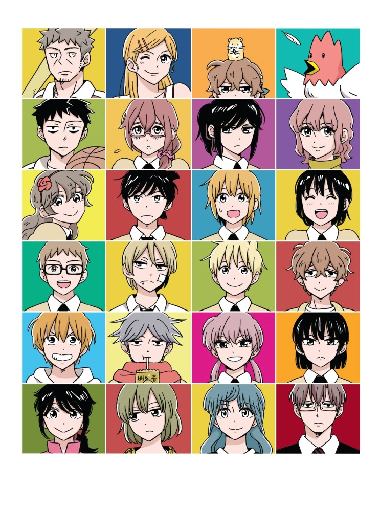
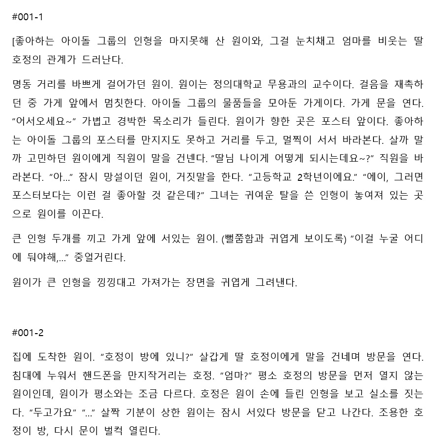
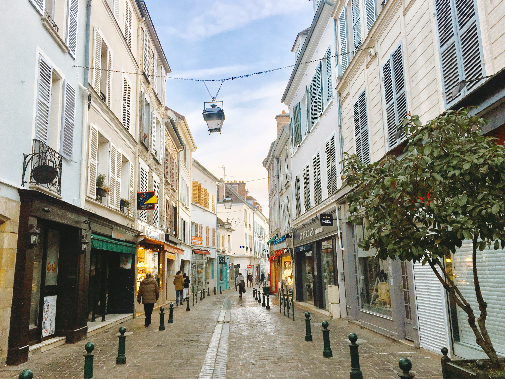
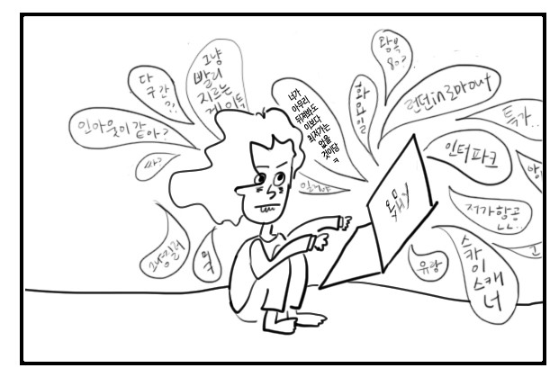

제가 좋아하는 것들이나 어떻게 사는지 보여드릴게유
평소에 이런것 해보는 거 좋아합니다
이쁘쥬?

아니면 이런것들이요! 가사는 ..ㅎ그래도
앨범 색은 참 예뻐서 해봤습니다
좋아하는 웹툰입니다
연민의굴레라는 웹툰이에요. 안봤다면 꼭 보세요!

연민의굴레라는 웹툰이에요. 안봤다면 꼭 보세요!
요즘 최대 고민인 시나리오입니다
소설의 원안을 써내는게 한 학기 과제인데
창피하니까 작게봅시다


왤케 지치죠

끝~~~~